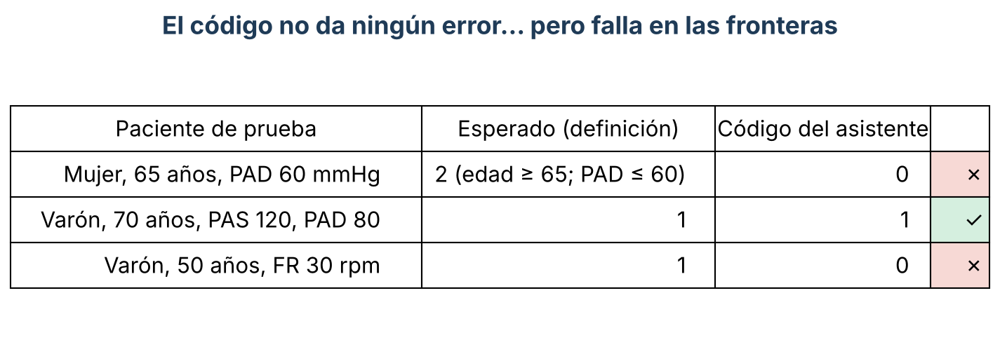
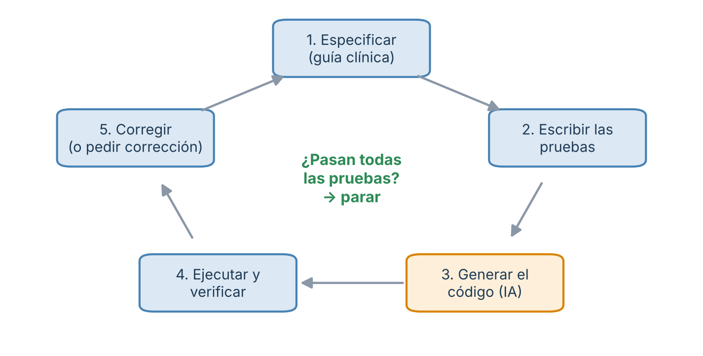
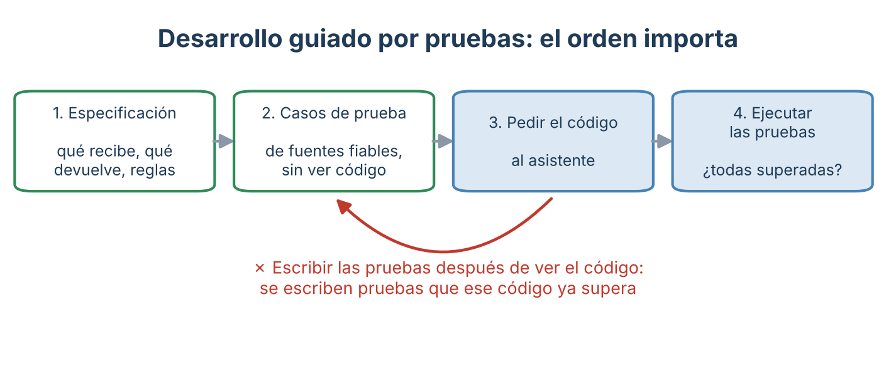
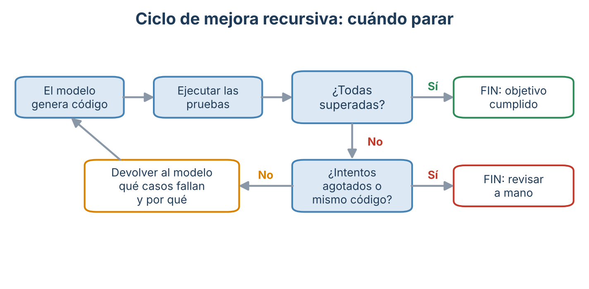
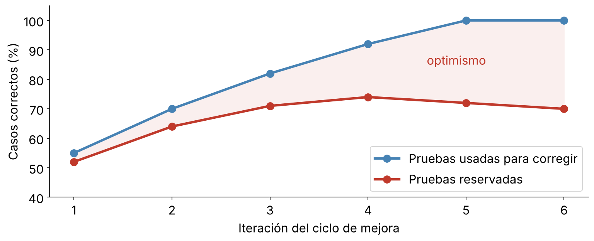
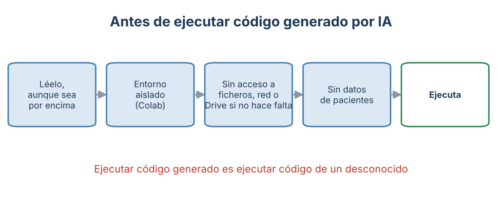

Bioestadística (1964) · Grado en Medicina · Curso 2027-2028
Tema 90Programación asistida por inteligencia artificial: ciclo de mejora recursiva de generación, verificación y corrección
Módulo 3. Procesado inicial de datos
Fernando Borrás Rocher · Universidad Miguel Hernández de Elche · CC BY 4.0
Objetivos de aprendizaje
Al terminar esta sesión serás capaz de:
- Describir el ciclo de mejora recursiva: generar, ejecutar, verificar y corregir.
- Escribir una especificación y sus casos de prueba antes de pedir código a un modelo de IA.
- Programar un bucle que pide código al modelo, lo prueba y le devuelve los fallos. El bucle para cuando se superan las pruebas o se agotan los intentos.
- Registrar cada iteración del ciclo para poder analizarla después.
- Explicar por qué superar las pruebas no garantiza que el código sea correcto (ley de Goodhart).
- Aplicar las medidas de seguridad necesarias antes de ejecutar código generado por IA.
Cómo usar esta presentación
Usa el selector de arriba para dar el tema en una sesión completa o en dos sesiones intercaladas.
🎓 Sesión de clase magistral
- 1. Caso clínico de partida 5 min
- 2. Conceptos clave 10 min
- 5. Autoevaluación 5 min
Explica los conceptos, haz la pausa activa y cierra con las ideas clave.
💻 Sesión de Colab
- 3. Demostración: un ciclo de mejora recursiva 20 min
- 4. Práctica en la app Bioestadística 10 min
- 5. Autoevaluación 5 min
Cada estudiante abre su copia del cuaderno, predice el resultado y después ejecuta la celda.
Teclas: ← → para pasar · N notas del profesor · M cambiar de modo · F pantalla completa · Esc índice.
1. Caso clínico de partida
«Funciona» no es lo mismo que «es correcto»

- El código del asistente se ejecuta sin errores… y se equivoca justo en las fronteras.
- Solo lo descubre quien tiene casos de prueba escritos a partir de la definición clínica.
2. Conceptos clave
2.1 El ciclo de mejora recursiva
El ciclo de mejora recursiva

- Especificar y escribir las pruebas antes de pedir el código.
- Generar, ejecutar, verificar y corregir, hasta cumplir un criterio de parada.
- El humano decide la especificación y cuándo el resultado es aceptable.
2. Conceptos clave
2.2 Primero la especificación y las pruebas

El orden correcto, que en ingeniería del software se llama desarrollo guiado por pruebas:
- Escribir la especificación: qué recibe la función, qué devuelve y con qué reglas.
- Escribir los casos de prueba a partir de fuentes fiables, antes de ver ningún código.
- Solo entonces pedir el código.
Si las pruebas se escriben después de ver el código, se tiende a escribir pruebas que ese código ya supera.
2. Conceptos clave
2.3 Criterios de parada

| Criterio | Para qué sirve |
|---|---|
| Todas las pruebas superadas | Objetivo del ciclo |
| Número máximo de intentos | Evita bucles infinitos y gasto de cuota |
| El modelo repite el mismo código | Señal de que no sabe corregirlo con la información dada |
2. Conceptos clave
2.4 La ley de Goodhart
Ley de Goodhart: cuando la prueba se convierte en objetivo

- Si se corrige mirando siempre las mismas pruebas, el código acaba ajustado a ellas.
- El rendimiento real se mide con pruebas reservadas, que no se usaron para corregir.
2. Conceptos clave
2.5 Seguridad

Ejecutar código generado por IA es ejecutar código de un desconocido:
- Leer el código antes de ejecutarlo, aunque sea por encima.
- Ejecutarlo en un entorno aislado, como Colab, nunca en un ordenador con datos sensibles.
- No pedir código que acceda a ficheros, a internet o a Drive si la tarea no lo necesita.
- Nunca incluir datos de pacientes en la especificación ni en las pruebas.
Pausa activa
Piensa 30 segundos, comenta con quien tienes al lado y vota.
¿Cuál es el orden correcto para programar con un asistente de IA?
En la sesión de Colab
Lo que acabas de ver se comprueba con datos en el cuaderno del Tema 90.
- Abre el cuaderno y guarda tu copia: Archivo → Guardar una copia en Drive.
- Ejecuta la celda de configuración.
- Ve a la demostración y predice cada resultado antes de ejecutar.
3. Demostración: un ciclo de mejora recursiva
3.1 Conexión con el modelo
▶ En tu cuaderno: 3.1 Conexión con el modelo. Antes de ejecutar, escribe qué esperas obtener.
Esta celda prepara la conexión con el modelo de lenguaje (Tema 80). Lee la clave de Secretos sin mostrarla. Si no hay clave, el cuaderno funciona con respuestas de ejemplo. Si el modelo indicado ya no existe, cambia la variable MODELO.
%pip install -q google-genai
MODELO = "gemini-2.5-flash"
try:
from google.colab import userdata
from google import genai
from google.genai import types
cliente = genai.Client(api_key=userdata.get("GEMINI_API_KEY"))
print("Conexión preparada con el modelo", MODELO)
except Exception as error:
cliente = None
print("Sin clave o fuera de Colab: se usarán respuestas de ejemplo.", type(error).__name__)
def preguntar(prompt, temperatura=0.2):
"""Envía un prompt al modelo y devuelve su texto (None si no hay conexión)."""
if cliente is None:
return None
respuesta = cliente.models.generate_content(
model=MODELO,
contents=prompt,
config=types.GenerateContentConfig(temperature=temperatura),
)
return respuesta.text3. Demostración: un ciclo de mejora recursiva
3.2 La especificación
▶ En tu cuaderno: 3.2 La especificación. Antes de ejecutar, escribe qué esperas obtener.
ESPECIFICACION = """
Escribe en Python una función llamada curb65 con estos parámetros:
- confusion (bool): desorientación de nueva aparición
- urea_mmol_l (float): urea sérica en mmol/L
- fr_rpm (int): frecuencia respiratoria en respiraciones por minuto
- pas_mmHg (int): presión arterial sistólica
- pad_mmHg (int): presión arterial diastólica
- edad (int): edad en años
Devuelve un entero de 0 a 5 sumando un punto por cada criterio:
- confusión presente
- urea > 7 mmol/L
- frecuencia respiratoria >= 30
- presión sistólica < 90 o presión diastólica <= 60
- edad >= 65
Devuelve solo el código de la función, dentro de un bloque ```python```, sin ejemplos de uso.
"""3. Demostración: un ciclo de mejora recursiva
3.3 Los casos de prueba, escritos antes que el código
▶ En tu cuaderno: 3.3 Los casos de prueba, escritos antes que el código. Antes de ejecutar, escribe qué esperas obtener.
Cada caso indica los datos de entrada y el resultado esperado, calculado a mano. Hay casos para cada criterio y para cada valor frontera: 7 frente a 7,1 mmol/L, 29 frente a 30 rpm, 90 mmHg de PAS, 60 mmHg de PAD y 64 frente a 65 años.
base = dict(confusion=False, urea_mmol_l=5.0, fr_rpm=18, pas_mmHg=130, pad_mmHg=80, edad=50)
PRUEBAS = [
(base, 0),
({**base, "confusion": True}, 1),
({**base, "urea_mmol_l": 7.0}, 0),
({**base, "urea_mmol_l": 7.1}, 1),
({**base, "fr_rpm": 29}, 0),
({**base, "fr_rpm": 30}, 1),
({**base, "pas_mmHg": 90}, 0),
({**base, "pas_mmHg": 89}, 1),
({**base, "pad_mmHg": 61}, 0),
({**base, "pad_mmHg": 60}, 1),
({**base, "edad": 64}, 0),
({**base, "edad": 65}, 1),
({**base, "edad": 65, "pad_mmHg": 60}, 2),
(dict(confusion=True, urea_mmol_l=9.0, fr_rpm=32, pas_mmHg=85, pad_mmHg=50, edad=80), 5),
]
print(len(PRUEBAS), "casos de prueba")La sintaxis {**base, "edad": 65} crea una copia del diccionario base cambiando solo la edad.
3. Demostración: un ciclo de mejora recursiva
3.4 Ejecutar y verificar el código generado
▶ En tu cuaderno: 3.4 Ejecutar y verificar el código generado. Antes de ejecutar, escribe qué esperas obtener.
def verificar(codigo):
"""Ejecuta el código en un espacio aislado y devuelve la lista de fallos."""
espacio = {}
try:
exec(codigo, espacio)
funcion = espacio["curb65"]
except Exception as error:
return [f"El código no se puede ejecutar: {type(error).__name__}: {error}"]
fallos = []
for entrada, esperado in PRUEBAS:
try:
obtenido = funcion(**entrada)
except Exception as error:
fallos.append(f"Con {entrada} se produce {type(error).__name__}")
continue
if obtenido != esperado:
fallos.append(f"Con {entrada} se esperaba {esperado} y se obtuvo {obtenido}")
return fallos3. Demostración: un ciclo de mejora recursiva
3.5 Generar código: con el modelo o simulado
▶ En tu cuaderno: 3.5 Generar código: con el modelo o simulado. Antes de ejecutar, escribe qué esperas obtener.
Si hay conexión, se pide el código al modelo, añadiendo el código anterior y sus fallos cuando los hay. Sin conexión, se usan tres versiones simuladas que reproducen errores habituales de los asistentes.
import re
VERSIONES_SIMULADAS = [
"""def curb65(confusion, urea_mmol_l, fr_rpm, pas_mmHg, pad_mmHg, edad):
puntos = confusion + (urea_mmol_l > 7) + (fr_rpm >= 30)
puntos += (pas_mmHg < 90 or pad_mmHg < 60) + (edad > 65)
return puntos""",
"""def curb65(confusion, urea_mmol_l, fr_rpm, pas_mmHg, pad_mmHg, edad):
puntos = confusion + (urea_mmol_l > 7) + (fr_rpm >= 30)
puntos += (pas_mmHg < 90 or pad_mmHg < 60) + (edad >= 65)
return puntos""",
"""def curb65(confusion, urea_mmol_l, fr_rpm, pas_mmHg, pad_mmHg, edad):
puntos = int(confusion) + (urea_mmol_l > 7) + (fr_rpm >= 30)
puntos += (pas_mmHg < 90 or pad_mmHg <= 60) + (edad >= 65)
return int(puntos)""",
]
def generar(codigo_anterior, fallos, intento):
"""Devuelve el código de la función: del modelo o de las versiones simuladas."""
if cliente is None:
return VERSIONES_SIMULADAS[min(intento - 1, len(VERSIONES_SIMULADAS) - 1)]
prompt = ESPECIFICACION
if codigo_anterior:
prompt += (
"\nTu versión anterior era:\n```python\n" + codigo_anterior + "\n```\n"
"Falla en estos casos de prueba:\n- " + "\n- ".join(fallos)
+ "\nCorrige la función."
)
texto = preguntar(prompt, temperatura=0.2)
bloque = re.search(r"```(?:python)?\n(.*?)```", texto, re.DOTALL)
return bloque.group(1).strip() if bloque else texto.strip()3. Demostración: un ciclo de mejora recursiva
3.6 El ciclo completo
▶ En tu cuaderno: 3.6 El ciclo completo. Antes de ejecutar, escribe qué esperas obtener.
MAX_INTENTOS = 5
registro = []
codigo, fallos = None, []
for intento in range(1, MAX_INTENTOS + 1):
codigo = generar(codigo, fallos, intento)
fallos = verificar(codigo)
registro.append({"intento": intento, "pruebas_falladas": len(fallos),
"pruebas_superadas": len(PRUEBAS) - len(fallos)})
print(f"Intento {intento}: {len(PRUEBAS) - len(fallos)} de {len(PRUEBAS)} pruebas superadas")
for fallo in fallos[:3]:
print(" ·", fallo)
if not fallos:
print("\nTodas las pruebas superadas. Código final:\n")
print(codigo)
break
else:
print("\nSe agotaron los intentos sin superar todas las pruebas: revisar a mano.")La construcción for … else ejecuta el bloque else solo si el bucle termina sin pasar por break, es decir, si se agotan los intentos.
3. Demostración: un ciclo de mejora recursiva
3.7 El registro del ciclo
▶ En tu cuaderno: 3.7 El registro del ciclo. Antes de ejecutar, escribe qué esperas obtener.
Registrar cada iteración permite analizar el ciclo: cuántos intentos hicieron falta y cómo evolucionaron los fallos. En el Módulo 5 compararemos así, con métodos estadísticos, distintas formas de pedir código al modelo.
import pandas as pd
import matplotlib.pyplot as plt
tabla = pd.DataFrame(registro)
print(tabla.to_string(index=False))
plt.figure(figsize=(6, 3.5))
plt.plot(tabla["intento"], tabla["pruebas_superadas"], marker="o")
plt.axhline(len(PRUEBAS), linestyle="--", color="gray", label="Total de pruebas")
plt.xlabel("Intento")
plt.ylabel("Pruebas superadas")
plt.xticks(tabla["intento"])
plt.ylim(0, len(PRUEBAS) + 1)
plt.title("Evolución del ciclo de mejora recursiva")
plt.legend()
plt.show()3. Demostración: un ciclo de mejora recursiva
3.8 Goodhart en acción: pruebas insuficientes
▶ En tu cuaderno: 3.8 Goodhart en acción: pruebas insuficientes. Antes de ejecutar, escribe qué esperas obtener.
¿Qué habría pasado con pruebas pobres, sin valores frontera? La primera versión simulada, con dos errores, las habría superado todas:
PRUEBAS_COMPLETAS = PRUEBAS
PRUEBAS = [
(base, 0),
({**base, "confusion": True}, 1),
(dict(confusion=True, urea_mmol_l=9.0, fr_rpm=32, pas_mmHg=85, pad_mmHg=50, edad=80), 5),
]
print("Fallos con pruebas pobres:", len(verificar(VERSIONES_SIMULADAS[0])))
PRUEBAS = PRUEBAS_COMPLETAS
print("Fallos con pruebas completas:", len(verificar(VERSIONES_SIMULADAS[0])))Con pruebas pobres, el ciclo habría terminado en el primer intento con un código erróneo. Una paciente de 65 años con PAD de 60 mmHg habría recibido 0 puntos en lugar de 2. La calidad del ciclo es la calidad de sus pruebas.
Ampliación
Ampliación: pruebas reservadas
Para protegerte frente a Goodhart, separa las pruebas en dos grupos. El primero se devuelve al modelo durante el ciclo. El segundo son pruebas reservadas, que solo se usan al final. Si el código supera las primeras pero falla en las reservadas, el ciclo ha aprendido a aprobar el examen. No ha aprendido a resolver el problema.
PRUEBAS_RESERVADAS = [
(dict(confusion=False, urea_mmol_l=7.5, fr_rpm=30, pas_mmHg=88, pad_mmHg=58, edad=70), 4),
(dict(confusion=True, urea_mmol_l=6.9, fr_rpm=22, pas_mmHg=95, pad_mmHg=62, edad=40), 1),
]
espacio = {}
exec(codigo, espacio)
for entrada, esperado in PRUEBAS_RESERVADAS:
obtenido = espacio["curb65"](**entrada)
print("correcto" if obtenido == esperado else "FALLO", "·", entrada, "→", obtenido)Ampliación
Ampliación: errores frecuentes
Escribir las pruebas después de ver el código: se acaban escribiendo pruebas que ese código ya supera.
No poner límite de intentos: el ciclo puede gastar toda la cuota de la API.
Ejecutar el código generado sin leerlo.
Devolver al modelo solo «está mal»: sin indicar qué casos fallan y por qué, el modelo no tiene información para corregir.
Dar por correcta una función porque supera las pruebas: solo es correcta en lo que las pruebas comprueban.
4. Práctica en la app Bioestadística
Abre la unidad 90 de la app Bioestadística y completa sus misiones:
- Misión básica (sin asistente): identificar qué valores frontera faltan en un conjunto de casos de prueba.
- Misión clínica (con pistas): escribir la especificación y las pruebas de la escala de Wells para trombosis venosa profunda.
- Misión reto (con asistente): ejecutar el ciclo de mejora recursiva para esa escala. Registrar las iteraciones y comprobar el resultado con pruebas reservadas.
Al terminar, exporta el informe de la unidad.
5. Autoevaluación
Responde sin asistente y sin ejecutar código.
5. Autoevaluación
Elige una opción: verás la explicación.
¿Cuál es el orden correcto para programar con un asistente de IA?
Una función CURB-65 usa edad > 65. ¿Qué caso de prueba descubre el error?
¿Qué información conviene devolver al modelo cuando su código falla?
Un ciclo de mejora recursiva supera todas sus pruebas en el primer intento. ¿Qué puedes concluir?
¿Por qué se fija un número máximo de intentos?
Ideas clave
- El ciclo de mejora recursiva genera código, lo ejecuta y lo verifica con pruebas. Devuelve los fallos al modelo hasta que se superan las pruebas o se agotan los intentos.
- La especificación y las pruebas se escriben antes del código, con atención a los valores frontera.
- Superar las pruebas solo garantiza lo que las pruebas comprueban (ley de Goodhart); las pruebas reservadas ayudan a detectarlo.
- El código generado por IA se lee antes de ejecutarlo, en un entorno aislado y sin datos de pacientes.
Glosario
| Término | Definición |
|---|---|
| Mejora recursiva | Ciclo en el que un modelo corrige su propia salida a partir de una verificación externa |
| Especificación | Descripción precisa de lo que debe hacer una función |
| Desarrollo guiado por pruebas | Forma de programar en la que las pruebas se escriben antes que el código |
| Criterio de parada | Condición que detiene un ciclo iterativo |
| Ley de Goodhart | Cuando una medida se convierte en objetivo, deja de ser una buena medida |
| Pruebas reservadas | Casos que no se usan durante el ciclo y sirven para la comprobación final |
exec() |
Función de Python que ejecuta código contenido en una cadena de texto |
Para saber más
- Lim WS, et al. Defining community acquired pneumonia severity on presentation to hospital: an international derivation and validation study. Thorax. 2003;58(5):377-382. doi:10.1136/thorax.58.5.377
- Tutorial de Python: errores y excepciones